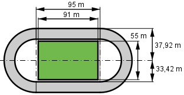

Aufgabe 188 Der Sportplatz soll erneuert werden. 2 Angebote liegen vor. Angebot 1: Angebot 2: Kunstrasen 34 €/m2 45,60 €/m2 Erdarbeiten 16 €/m2 18,75 €/m2 Rasen verlegen 4,45 €/m2 6,25 €/m2 Laufbahn 42 €/m2 88 €/m2 Arbeitskosten 6,30 €/m2 Erdarbeiten 15,80 €/m2 ohne it MWSt von 19% Wie teuer ist das günstigere Angebot?

Rasenfläche = 91 m * 55 m = 5 005 m2 Laufbahn = 2 * Rechteck + Kreisring 2 * Rechteck = = 2 * 95 m * (37,92 m – 33,42 m) = 855 m2 Kreisring = (ra2 - ri2) * π = = (37,922 m2 - 33,422 m2) = 1 008 m2 Laufbahn = 855 m2 + 1 008 m2 = 1 863 m2 Angebot 1: Rasenfläche: Kunstrasen + Erdarbeiten + Rasen verlegen = = 34 €/m2 + 16 €/m2 + 4,45 €/m2 = 54,45 €/m2 Kosten ohne MwSt = 5 005 m2 * 54,45 €/m2 = = 272 522,25 € Laufbahn: Laufbahn + Arbeitskosten + Erdarbeiten = 42 €/m2 + 6,30 €/m2 + 15,80 €/m2 = 64,10 €/m2 Kosten ohne MwSt = 1 863 m2 * 64,10 €/m2 = = 119 418,30 € Gesamtkosten mit MwSt = = 1,19 * (272 522,25 € + 119 418,30 €) = = 466 409,25 € Angebot 2: Rasenfläche: Kunstrasen + Erdarbeiten + Rasen verlegen = = 45,60 €/m2 + 18,75 €/m2 + 6,25 €/m2 = 70,60 €/m2 Kosten = 70,60 €/m2 * 5 005 m2 = 353 353 € Laufbahn: Kosten = 88 €/m2 * 1 863 m2 = 163 944 € Gesamtkosten = 353 353 € + 163 944 € = 517 297 €